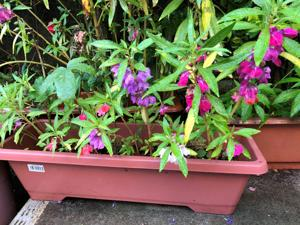

うるがいの話 ある日
最新: シバの女王うるがいとは 前提知識です
カニの画像をクリックすると『うるがいの話』サイトを表示します|
|
うるがい(ｳﾙｶﾞｲ urugai)とは、『もずくがに』の名前でとても大きくなります。 |
|---|---|
|
|
たながー（ﾀﾅｶﾞｰtanagaa）とは手長えびのことで、何種類かあり大きいのは車 エビぐらいになります。 |

|
ぶながー(bunagaa)とは、赤い髪の毛、赤い身体、そして身長は１ｍ２０ｃｍ ぐらい、川の蟹を食べているの目撃された。場所は沖縄県国頭郡大宜味村のと ある村僕の隣近所に住んでいる爺さんから、聞いた話です。 |
2021年09月28日 (火）シバの女王
16:36

「僕のとくに好きな物語が一つある。それはサバの女王の話だ。どうしてこれ
が好きなのかわからないけれども、僕が何度も話すのでロールも好きになって
しまった。 マムはそれを知っていて、ときどきほほえみながら赤い本のこの
章を開いて読んでくれる――「ソロモンは神のためにあのように壮麗な神殿を
築いたのち、自分のための宮殿を十四年の歳月を費やして建造した。そのいた
るところに黄金が輝き、円柱や彫刻の壮麗さはあらゆる人々の目を引きつけた
」それからサバの女王が現れる・・・・・・（引用 黄金探検者より）
ボレロの曲のドラマのパーツを、どうすれば楽譜ソフトで演奏できるかとユー
チューブをみていると、なぜか懐かしい『シバの女王』の曲を見てしまう。つ
いでにＴＡＢを見つけ、あとで演奏のネタとする。この時点で既に夜の１１時
過ぎ、疲れてしまったので横になる。そして、２週間近く寝かしていた本を開
けて読む。読むなり、『サバの女王』の文書、おおお！、これはなんなんだ。
シバの女王のシバは、シェバあるいはサバとも呼ぶ。そして本のページを見る
と２７頁、昨日の日付が２７日、偶然にしては。そして今朝、空飛ぶ夢をみる
これまではフワフワが多いが、ドラゴンボールの孫悟空なみのスピードで気持
ち良く飛んだ。むむむ、そろそろ・・・か。朝からドラム譜を勉強する、そし
て何とか楽譜ソフトで演奏できた。その昔、職場の軽音楽部でドラマが全く未
経験だが、やがて演奏できるようになったケイタ・・さんを思い出す。もう年
金生活をおくっていると思うが。